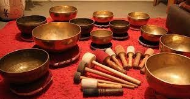
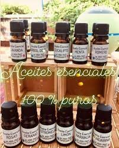

HOLISTIC HOME
Horarios de atención
- lunea a viernes
- 10:00 am 9:30 pm
- sabado
- 10:00 am 6:00 pm
- josemeridaher@gmail.como
- 5552525252
Un espacio para encontrar la paz interior, podrás disfrutar de momento de relajación con terapias alternativas cuencos, péndulo, chakras.Nuestro principal centro de acción es la persona, en el aspecto físico y espiritual, como un todo conectado con el universo. Nuestra intención es ayudar a armonizar y sanar los distintos aspectos del cuerpo físico, psíquico, emocional, social y espiritual, logrando así una expansión total de consciencia mediante un camino, un proceso, enmarcado siempre dentro de su búsqueda personal.
Satisfacer las necesidades de nuestros clientes, cumpliendo y excediendo sus expectativas, a través de un proceso de atención personalizado y consiente, logrando el desarrollo personal, emocional físico de cada uno de nuestros clientes.
Todos nuestros productos son elaborados artesanalmente
Pendulo
Cuencos
Aceites
